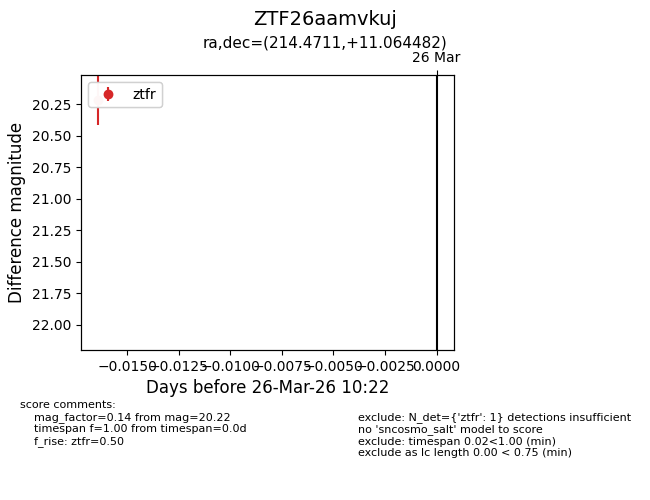
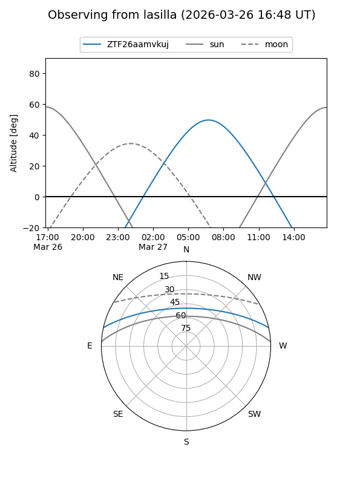
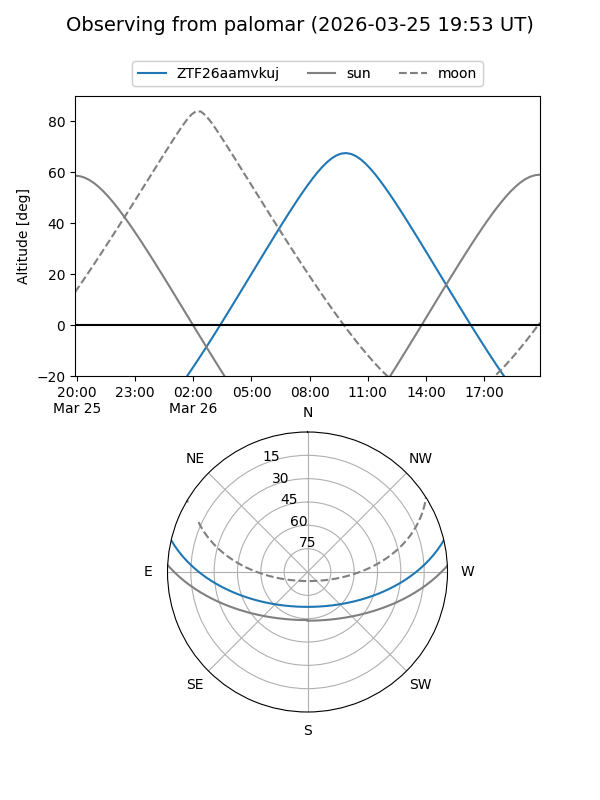

ZTF26aamvkuj
Target ZTF26aamvkuj at 2026-03-26 10:25
Aliases and brokers:
FINK: link
Lasair: link
ALeRCE: link
alt names
ZTF26aamvkuj (ztf,fink_ztf)
Coordinates:
equatorial (ra, dec) = 214.4711,+11.06448
equatorial (HMS+DMS) = 14:17:53.08,+11:03:52.14
galactic (l, b) = (358.7759,+64.09930)
Flags:
Photometry:
last ztfr=20.22
1 ztfr detections
Lightcurve

Visibility


Additional plots